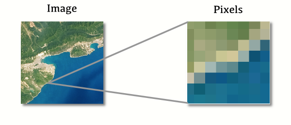
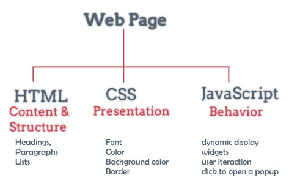
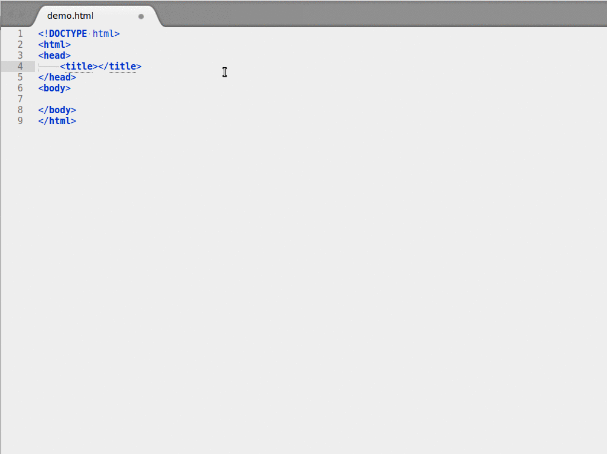

Creativity with Vector tiles!

Presentation and workshop for MGI 15 years!
By: Niene Boeijen
This presentation:
www.github.com/NieneB/mgi_workshop
About me


What the map can be
Wij maken interactieve kaarten en datavisualisaties. Onze expertise is open {source; data; standaarden}. Onze kracht is het combineren van cartografie en webtechnologie.
Utrecht, The Netherlands
We make interactive maps and visualizations.


This presentation
- Web maps
- From raster to vector
- About vector tiles
- examples
Goal of today!
At the end of this workshop, you will have your own web page with an interactive map! Including custom data and different background maps, of the area you want to show! Your web page will be hosted on Github, so you can immediately share your progress with all your family and friends!

Beginners

For beginners means: if you have NO knowledge of JavaScript, HTML, CSS, Leaflet.js and D3.js, this workshop will help you get started!
What is a web map?
Analogue paper maps
| Digital maps | VS | Web Maps |
|---|---|---|
| Data | Tiles, styles and servers | |
| On the computer | View in a browser | |
| Calculate, analyze | scroll, pan, zoom |

openstreetmap.org
google.com/maps
a little History
Digital maps
GIS software
GIS on the Web is not user friendly..
1996 Mapquest first with a web service!

But really slow to load..
in 2004 Endoxon found a way for quick online mapping! map.search.ch
2005 Google Maps took over!
The solution?
Tiles!
Tiles
All tiles size 256x256 pixels
Placed in a grid, sharing boundaries
Seamless map
All these little tiles load way faster than one big map!
We call this slippy maps
Zoom levels
Each zoom level has its own set of tiles!
Zoom level 0: 1 tile for the whole world.
Increases exponentially...
Zoom level 1: 4 tiles
Zoom level 2: 16 tiles
etc.
 Map with tile
bounds
Map with tile
bounds
Styling & Serving tiles
Tiles are styled and rendered in advance
Tiles are just images on the web
http://tile.openstreetmap.org/5/16/10.png
{kind=link}
/z/x/y


Layers!
Base Layer
Raster
Data Layer / Feature Layer
Vector

Summary
Web Map Building blocks
Data, styled, tiles, server:
Base Layer
Additional Data:
Vector Layers
Interface and Interaction
Zoom, panning, clicking etc.
Nadelen Raster tegels
-
Rendering wordt op server gedaan
-
Tegel set is vast-gezet: static
-
Veel opslag ruimte nodig!
-
Meerdere visualisaties = Meerdere tegel sets
-
Gebruiker kan niks aanpassen
-
Geen interactie met objecten mogelijk
-
Object informatie moet los opgevraagd worden in database
van Raster naar Vector

Vector Tile

Binary encoded Protocol Buffers
Alleen data! Geen stijl kleur
Zelfde tegel schema als raster tegels
256 x 256 px
Versimpelde geometrie
WebGL
Rendering gebeurt in de browser
Graphics Processing Unit(GPU)
widely supported in modern browsers
++ Rotating tilting
++ Smooth/inifinte zooming
Voordelen Aanbieder (Server side)
-
Gecomprimeerde data, klein en snel!
-
Snelle productie, minder opslag
-
1 tegel set in opslag
-
Attribuut data beschikbaar in browser, minder database request!
-
Rendering stijl aan client-side
-
Minder druk op server-side
Voordelen gebruiker (client side)
-
Vector = hoge resolutie, zelfs bij ver inzoomen
-
1 tegel set- meerder stijlen mogelijk!
-
Stijl kan je zelf aanpassen!
-
Stijlen in json of js - geen moeilijke SLD's meer nodig
Voorbeelden!
Kadaster PDOK
BRT + BGT
Zoom level 0 tot 16
1 tegel set, meerder visualisaties!
https://github.com/PDOK/vectortiles-bgt-brt
"http://geodata.nationaalgeoregister.nl/beta/topotiles/{z}/{x}/{y}.pbf"Datalab Amsterdam
"https://t{s}.data.amsterdam.nl/wm/{z}/{x}/{y}.pbf"WebGL voor 3D effecten!
Online examples
Open Zoom Stack UK
OS Open Zoomstack trial Story mapStandaarden
Mapbox Vector Tile Standard.Based on the binary protocal buffer (.pbf) from Google.
Standard already used by Esri.
Web Mercator projection, Google tiling scheme.
Bestands Formaat
.mvt - .pbf
.mbtiles
Waar komen ze vandaan?
Download
Online host services
Zelf maken & Zelf hosten
Host Services
Zelf serveren!
Eigen data of OSM data

OpenMapTile Server (tileserverGL)
More command line tools
Hoe te visualiseren?
How to bring this all together?
JavaScript!
Puts it all together,
Tiles, content, interaction

Making a Web Page

New to HTML & CSS?
Start with Making a web page
Or use Code Academy
Maps with JavaScript
JavaScript Library
Including a JavaScript library in your code is like copying and pasting someone else's code into yours. You have access to everything in that library.
In our case, it's a bunch of cool tools to make web maps and give them familiar functionality.
JavaScript Libraries for Mapping

Cartography is the new code.
 [source]
[source]
data design code
MapboxGL.js

mapboxgl.accessToken = 'yourowntoken';
var map = new mapboxgl.Map({
container: 'map-container',
style: 'style.json',
hash: true,
zoom: 11,
pitch: 60,
bearing: 62.4,
center: [ 4.8, 52.4]
});
JSON
JavaScript Object Notation

style.json
{
"version": 8,
"name": "Mijn eigen Stijl",
"sprite": "url",
"glyphs": "url/{fontstack}/{range}.pbf",
"sources": {...},
"layers": [
{
"id": "background",
"type": "background",
"paint": { "background-color":"#FFFFFF" }
},
{...}
]
}
Let's Map!
Everything is on Github
Github?!

Used for code.
Version control.
Sharing.
Documentation.
Use a good text-editor
Nodepad ++
With Syntax Highlighting!
The workshop
https://github.com/NieneB/mgi_workshop/wiki
follow the steps
Made with previous workshops:
https://luuks.github.io/VectorTiling/#11/52.3644/5.2416/90/60
Be creative!

There is more to find on the Internet
Do not keep yourself to the assignments!!
More info?
My lists of
interesting links, workshops, presentations and background information:
for webmapping in general and d3 & Leaflet
Feel free to contact me!
Thank you!
Niene Boeijen
niene@webmapper.net